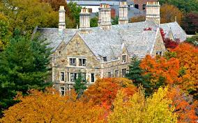
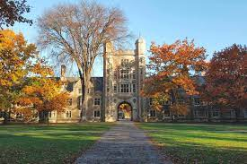
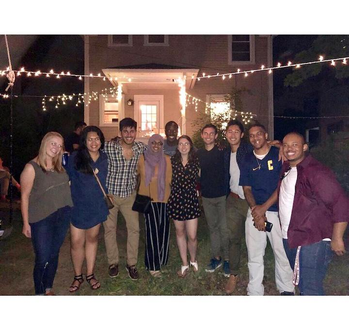
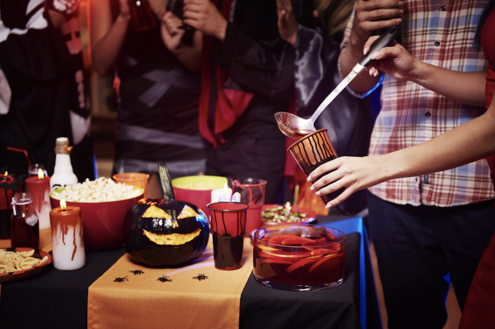
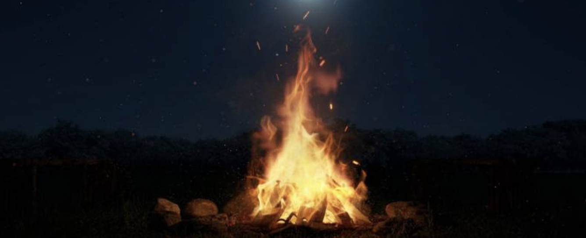
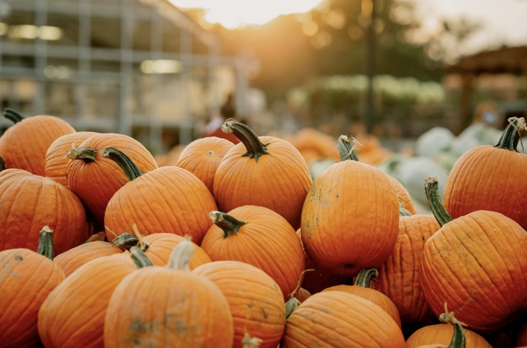
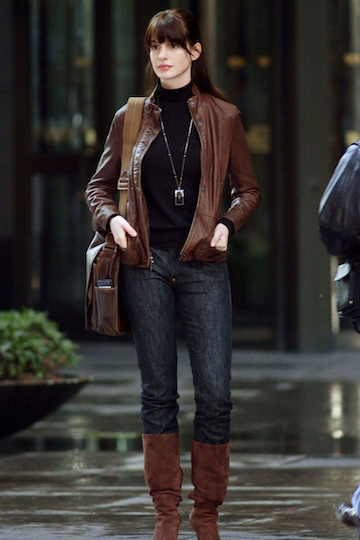

Introduction to University of Michigan for Fall
This page will describe fall things to do. It'll talk about the things I like about fall at Umich and the things I don't like.
I'll be covering topics about things you can do during that fall with your friends, that will include food, clothing, and places to go to.
I think that fall in Umich is one of the best seasons of the year. I'm from the East Coast, Virginia specifically, and so I have some experience of fun things to do during the fall. But, since I came here to Ann Arbor, MI, the fall vibes here go hard. Maybe it's because when winter sets in, no one is really go out.
    